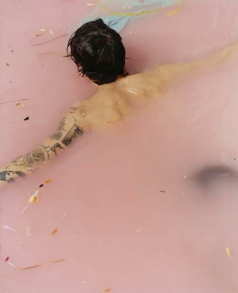

Este grandioso álbum esta compuesto por 10 canciónes en total y 2 vídeo clips, con una duración de 40 minutos en total. Es de genero musical soft pop, britpop y pop rock.
Canciónes:

apriete la imagen
- Meet Me in the Hallway
- Sign of the Times
- Carolina
- Two Ghosts
- Sweet Creature
- Only Angel
- Kiwi
- Ever Since New York
- Woman
- From the Dinning Table
El álbum fue lanzado en el 12 de mayo de 2017, la grabacion fué realizada en Geejam Hotel Recording Studio · Port Antonio · JamaicaJeff Bhasker's home studio, y con la discografía de Columbia Records
Harry debutó en el número uno en el Billboard 200 de Estados Unidos con 230 mil unidades equivalentes de álbum, de las cuales 193 mil eran ventas de álbumes puras. Hasta el día de hoy, el álbum ha vendido más de 4 millones de copias puras a nivel mundial, siendo este uno de los álbumes más exitosos del 2017.